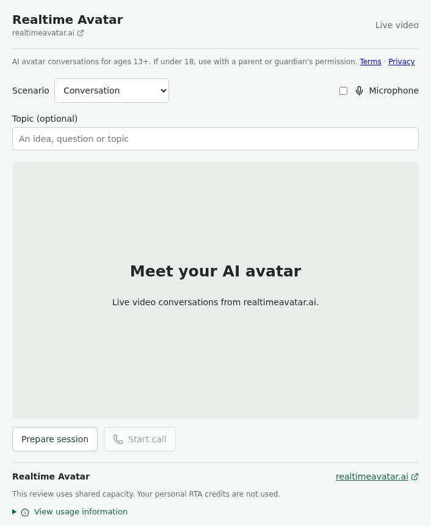
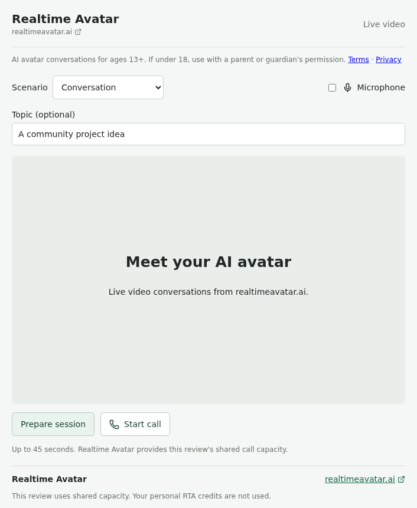
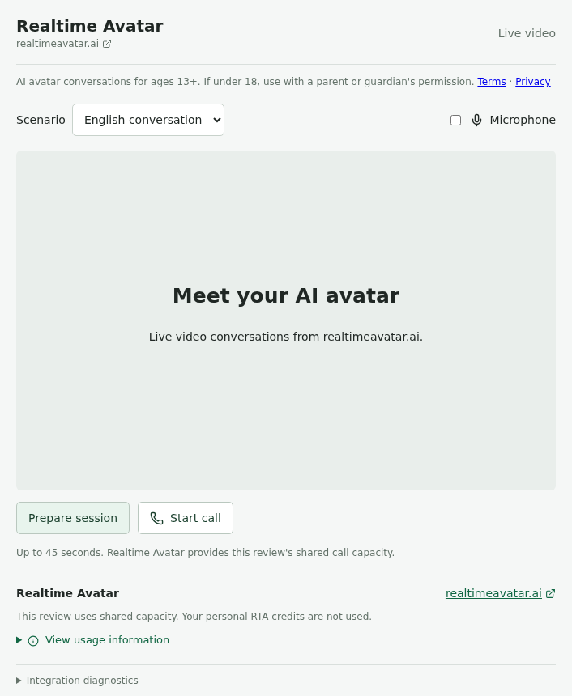

Realtime Avatar
Prepared submission materials. Not submitted; release blockers remain.
Download draft bundle · Listing manifest · 5 positive + 3 negative cases · Tool rationales · Validation
Privacy addendum draft · Terms addendum draft · Readiness checklist
Earlier technical walkthrough
Historical recording of the earlier interface in an MCP Apps host fixture, not ChatGPT. Real avatar call with typed turns and End. This screen recording has no audio track; prior RTP tests separately confirmed avatar audio.
Avatar video with original audio
Historical recording of the received avatar media tracks from the earlier technical test.
Executed review cases · Capture evidence · ChatGPT and portal access checks
Scenario screenshots
Current interface captures at 706 × 860 pixels from the test host.



Hosted Worker review
realtimeavatar.ai · Open Realtime Avatar · Production terms · Production privacy policy
MCP endpoint: https://rta-chatgpt-practice-review.zjudn2013.workers.dev/mcp (Authentication: None). A Durable Object persists the shared review budget and session ownership.
Real Worker call test · Release confirmation · Headed versus headless browser checks
Headed Chrome reaches ChatGPT and the publishing portal login successfully. A signed-in publishing account is still required for verification and actual ChatGPT tests.
Outstanding release evidence
- publisherVerified
- domainVerified
- productionServiceReady
- policiesApproved
- chatgptWebPassed
- chatgptMobilePassed
- portalToolScanPassed
- actualChatgptRecording
Publisher: The Influence Company. Support · Current privacy policy · Current terms.